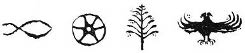

Dolunay denizin üstünde sallanıyordu. Gençler, yanlarında kaplumbağalar, sarkaç, yaşlı bir adam, ellerinde çayları Bengül Teyzeleriyle konuşmaya başladılar.
Erim merakla sordu:
— Bize Osman Hamdi Dede’yi anlatır mısın Bengül Teyze?
Öğrenecekleri bilgiler, şifreyi çözmelerinde yardımcı olabilirdi.
— Babam 1842’de doğmuş. Üniversiteyi Paris’te okumuş, hatta o dönemin ünlü ressamları Şeker Ahmet Paşa ve Süleyman Seyyit’le orada beraber okuyup arkadaşlık yapmış, yanılmıyorsam 1862 yılında. Sonra İstanbul’a dönüyor, 1881’de Müze-i Hümayun, yani padişahın müzesinin başına gelen ilk Türk oluyor. Babam arkeolojiye çok meraklı; kazılarda çıkarılan o değerli eserlerin, heykellerin ülke dışına nasıl kaçırıldığının farkında. Belki siz de bilmiyorsunuzdur Dünyanın Yedi Harikası’ndan ikisini –koca koca tapınakları– bu ülkeden padişahın izniyle alıp götürdüler. Bergama’daki Artemis Tapınağı ve Bodrum’daki Mozole, bugün Londra’da The British Museum’da[17] sergileniyor. Babam bunlara kahrolurdu. Kendisi Memalik-i Osmaniye’nin[18] topraklarının her yerinde kazılara katıldı. Mesela, ünlü İskender Lahdi’ni Lübnan’daki kazısında buldu. Onun, Sayda Kralı Abdalonymos’a ait olduğunu söyledi. Bu lahit, İstanbul Arkeoloji Müzesi’nde sergileniyor. Arkeoloji Müzesi’nin kurucusu da babam Osman Hamdi Bey’dir. 1899’da kurdu orayı ama bence ülkemize en büyük hizmeti, 1883’te tarihi eserlerin Türkiye topraklarından yurt dışına çıkarılmasını engelleyen kanunu çıkarttırmasıdır. Kendi de derdi, en büyük iki hizmetinden birisinin bu kanun olduğunu. “Diğeri ne?” diye sorduğumuzda sadece gülümser, “Öğrenirsin nasılsa” der ve size gösterdiğim “İkinci resmi, torunlarım ve baban Tahsin Erdoğan Efendi tarafından gelenler dışında kimseye gösterme” derdi. Osmanlı Ressamlar Cemiyeti’nin de “Kaplumbağalar ve Adam” diye sergilediği resim, yukarıda gördüğünüz 1906’da yaptığı resimdir. Bu resmi 1907’de bitirdi ve o günden bu yana ilk defa birileri görüyor. Resmi yaptıktan üç yıl sonra kaybettik onu. Otuz yıl müze müdürlüğü yaptı ve hayatı hep kazılarda geçti. Bu evi 1884’de yaptırdı. Yazları da burada resim yapardı. Yalnız, bu resim bittikten sonraki son üç yıl çok mutluydu doğrusu.
Erim,
— Babamla nasıl tanıştılar?
Bengül Teyze çayından küçük bir yudum aldı.
— Galiba 1905 ya da 1906’ydı, babam ellili yaşlarının ortasındaydı, baban yirmi-yirmi beş yaşlarında genç bir zabit olarak bu köşke ziyarete geldi. Arkeolojiye olan merakını anlattı, o gece geç saatlere kadar tarih, sanat konuştular. Babamın kimseyle bu kadar uzun ve keyifli konuştuğunu görmemiştim. Gece baban bizde kaldı. “Ülkede bu denli arkeolojiyle ilgili ilim sahibi gençler bulunması beni çok mütehassis[19] etti doğrusu” dedi sabah bize babam. O günden sonra hayatının son dört yılında beraber çok yere gittiler. Bu resimhanede uzun uzun çalıştılar, hatta beraberce Muhittin Dede’ye de gittiklerini bilirim.
Gençler dönüp birbirlerine baktılar.
Nisan,
— Bu resmi nerede yaptı anne?
— Resimlerin ikisini de burada, resimhanede yaptı.
— Bu durumda benim tüm teorim çöktü. Ben bu resmin yapıldığı yerde bir şeyler olduğunu düşünüyordum, dedi Erim.
— Anne, sen dedemin modelle çalıştığını söylerdin hep, “Bakarak çizerdi” derdin.
— Aslında bunu da kendi çektiği bir fotoğrafa bakarak çizdi.
Çocuklar heyecanlandılar.
— Anne, nerenin fotoğrafı biliyor musun?
— Evet, Erdoğan’la birlikte Bursa’ya gitmişlerdi. Yeşil Cami’de haftalarca fotoğraf çektiler ve restorasyon için orada çalıştılar. Bu resmi o fotoğraflardan birine bakarak yaptı.
— Yeşil Cami, diyerek ayağa kalktı Erim.
— İçeri girip on üç tane basamak çıkacağız, dedi Nisan.
— O odadaki pencere...
— Bize “Sarkaç, yaşlı adam ve kaplumbağalar” diyerek bu resim olduğunu anlattılar.
— Deden ve babam...
— Evet, resmi öyle bulduk.
— Asıl resmin bu olmadığını da kaplumbağa sayısıyla anlattılar...
— Aradığımız şeyin yerini göstermek için su testisiyle işaret koymuş resme.
— Bence dedem ve baban beraber çalışıp bize mesajı bırakmışlar.
— Evet, onun altında görünen taş plaka! Onun altına bakmalıyız.
— Bir saniye, kitabı verir misin bana?
Erim kitabı uzattı.
Nisan,
— Bak, bu siyah beyaz resimdeki, bize bakan yaşlı adam kim?
— İnanılmaz, Osman Hamdi Dede!
— Bize camiyi işaret ediyor, kitaptaki tek renkli şey bu. Kubbe yeşile boyanmış.
— Yeşil Cami...
— Bu resim aynı zamanda yaş günün için annemin sana hediye yolladığı yağlı boya tablo, sadece dedem yok.
— Deden 1907’de ikinci “Kaplumbağa ve Adam” resmini bitirdiğinde bunu yaptı. Baban da o dönem yanındaydı. Üzerinde bir not buldum: “Bunu Erdoğan’ın akrabalarına yolla” diye, dedi Bengül Teyze.
— Demek ki fazladan planları da varmış biz çözemezsek diye.
— Galiba şifreyi çözdük, bize bir Bursa yolculuğu görünüyor, dedi Erim.
Sessizlik oldu. O ana kadar görüş belirtmeyen Zafer de sonunda konuştu:
— Başka üzümlü kek var mı Bengül Teyze?
Hepsi kahkahalara boğuldular. Aslında resimhanenin denizi gören penceresinin altında konuştuklarını not alan iri yarı gölgeyi fark etseler bu kadar gülmeyeceklerdi ve konuşmayacaklardı.
